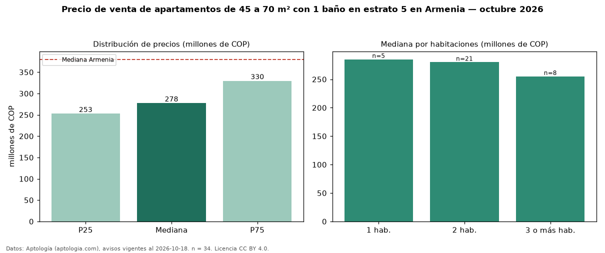

Precio de venta de apartamentos de 45 a 70 m² con 1 baño en estrato 5 en Armenia — octubre 2026
En Armenia, la mediana de precio de venta de apartamentos de 45 a 70 m² con 1 baño en estrato 5 es COP 278 millones, según 34 avisos vigentes. Eso es 23 % menos que la mediana de los apartamentos de 45 a 70 m² en estrato 5 en venta de Armenia (COP 360 millones, n = 333); este segmento reúne el 10 % de esos avisos. Por metro cuadrado, la mediana es COP 5,40 millones/m² (n = 34), 12 % por debajo de los apartamentos de 45 a 70 m² en estrato 5 en venta de Armenia (COP 6,12 millones/m²). El área mediana anunciada es 52 m². El segmento con más oferta es el de 2 habitaciones (21 avisos, mediana COP 280 millones); pasar de 1 habitación a 3 o más habitaciones cambia la mediana −11 %. La administración mediana declarada es COP 255.000 al mes (n = 19). La mediana de todos los apartamentos en venta de Armenia es COP 380 millones (−27 % de diferencia). 80 % de los avisos con el dato declara parqueadero. Datos: Aptología (aptologia.com), CC BY 4.0 — https://www.aptologia.com/venta/armenia. Archivos: PDF, CSV con las cifras y gráfica PNG.

| Avisos únicos | 34 |
|---|---|
| Percentil 25 | COP 252.750.000 |
| Mediana | COP 277.500.000 |
| Percentil 75 | COP 329.815.850 |
| Mediana por m² | COP 5.400.000 |
Fuente: avisos vigentes de portales inmobiliarios recopilados por Aptología, deduplicados (mínimo 30 avisos únicos por celda). Precios pedidos, no cerrados. Fecha: 2026-10-18.